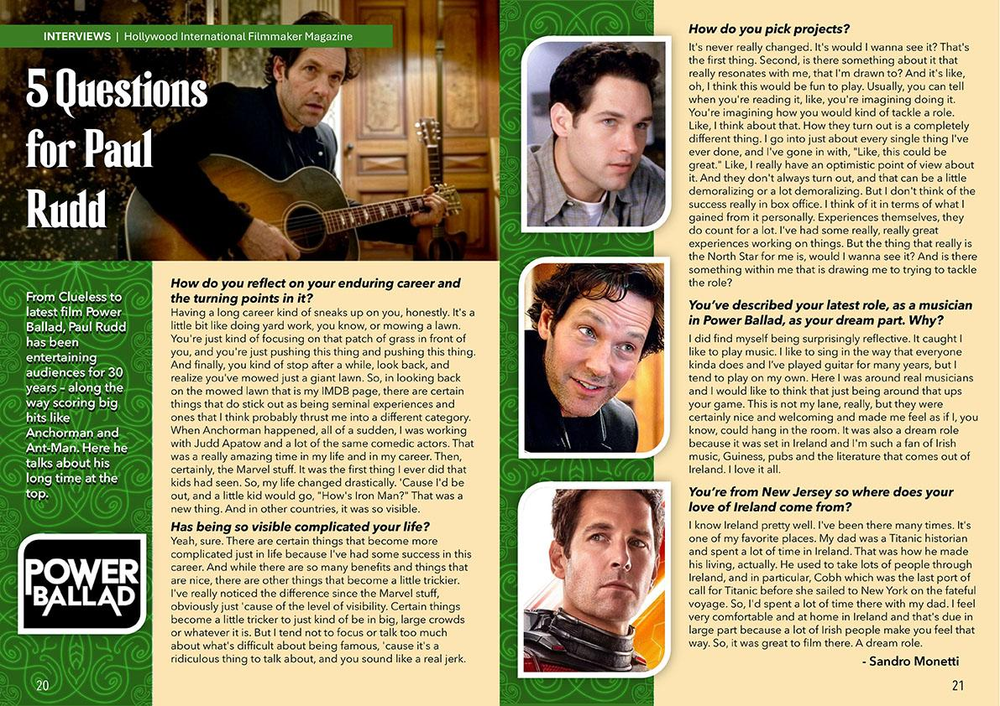

From Clueless to latest film Power Ballad, Paul Rudd has been entertaining audiences for 30 years – along the way scoring big hits like Anchorman and Ant-Man. Here he talks about his long time at the top.
How do you reflect on your enduring career and the turning points in it?
Having a long career kind of sneaks up on you, honestly. It’s a little bit like doing yard work, you know, or mowing a lawn. You’re just kind of focusing on that patch of grass in front of you, and you’re just pushing this thing and pushing this thing. And finally, you kind of stop after a while, look back, and realize you’ve mowed just a giant lawn. So, in looking back on the mowed lawn that is my IMDB page, there are certain things that do stick out as being seminal experiences and ones that I think probably thrust me into a different category. When Anchorman happened, all of a sudden, I was working with Judd Apatow and a lot of the same comedic actors. That was a really amazing time in my life and in my career. Then, certainly, the Marvel stuff. It was the first thing I ever did that kids had seen. So, my life changed drastically. ’Cause I’d be out, and a little kid would go, “How’s Iron Man?” That was a new thing. And in other countries, it was so visible.
Has being so visible complicated your life?
Yeah, sure. There are certain things that become more complicated just in life because I’ve had some success in this career. And while there are so many benefits and things that are nice, there are other things that become a little trickier. I’ve really noticed the difference since the Marvel stuff, obviously just ’cause of the level of visibility. Certain things become a little tricker to just kind of be in big, large crowds or whatever it is. But I tend not to focus or talk too much about what’s difficult about being famous, ’cause it’s a ridiculous thing to talk about, and you sound like a real jerk.
How do you pick projects?
It’s never really changed. It’s would I wanna see it? That’s the first thing. Second, is there something about it that really resonates with me, that I’m drawn to? And it’s like, oh, I think this would be fun to play. Usually, you can tell when you’re reading it, like, you’re imagining doing it. You’re imagining how you would kind of tackle a role. Like, I think about that. How they turn out is a completely different thing. I go into just about every single thing I’ve ever done, and I’ve gone in with, “Like, this could be great.” Like, I really have an optimistic point of view about it. And they don’t always turn out, and that can be a little demoralizing or a lot demoralizing. But I don’t think of the success really in box office. I think of it in terms of what I gained from it personally. Experiences themselves, they do count for a lot. I’ve had some really, really great experiences working on things. But the thing that really is the North Star for me is, would I wanna see it? And is there something within me that is drawing me to trying to tackle the role?
You’ve described your latest role, as a musician in Power Ballad, as your dream part. Why?
I did find myself being surprisingly reflective. It caught I like to play music. I like to sing in the way that everyone kinda does and I’ve played guitar for many years, but I tend to play on my own. Here I was around real musicians and I would like to think that just being around that ups your game. This is not my lane, really, but they were certainly nice and welcoming and made me feel as if I, you know, could hang in the room. It was also a dream role because it was set in Ireland and I’m such a fan of Irish music, Guiness, pubs and the literature that comes out of Ireland. I love it all.
You’re from New Jersey so where does your love of Ireland come from?
I know Ireland pretty well. I’ve been there many times. It’s one of my favorite places. My dad was a Titanic historian and spent a lot of time in Ireland. That was how he made his living, actually. He used to take lots of people through Ireland, and in particular, Cobh which was the last port of call for Titanic before she sailed to New York on the fateful voyage. So, I’d spent a lot of time there with my dad. I feel very comfortable and at home in Ireland and that’s due in large part because a lot of Irish people make you feel that way. So, it was great to film there. A dream role.
This story first appeared in Issue 31 (Fall 2026) of Hollywood International Filmmaker.
As it appeared in print

